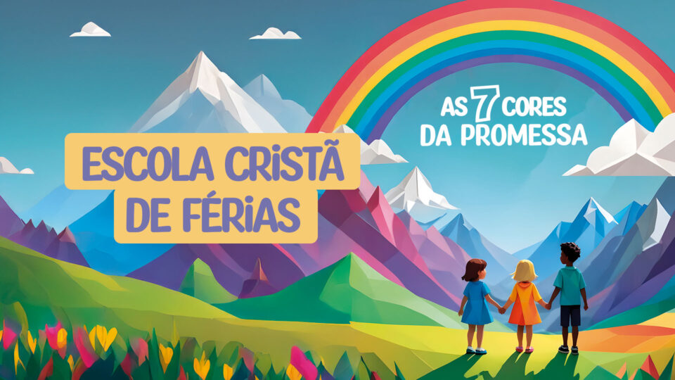

Objetivo
Ao principal objetivo da ECF é ensinar valores cristãos e histórias bíblicas de forma lúdica, criativa e acessível às crianças, ao mesmo tempo em que oferece um ambiente seguro, acolhedor e divertido durante as férias.
Duração
Dura 5 dias, com encontros de algumas horas por dia (8:00 a 12:00) pela manhã
Durante:
- Dias 7 A 11 de Julho
Quem organiza?
É organizada pelo ministério criança da igreja, com o apoio de voluntários, professores e líderes Responsaveis.
Acesse esse link para ver o siguinificado deles: https://www.adventistas.org/pt/criancas/
Bom para:
- Ensina valores como amor ao próximo, respeito, honestidade e fé
- Proporciona interação social positiva
- Oferece uma alternativa saudável ao tempo livre nas férias
As 7 Cores da Promessa
No ano passado, a Escola Cristã de Férias foi um tempo muito especial e divertido com o tema “As 7 Cores da Promessa”. Cada dia representava uma cor do arco-íris e uma verdade sobre Deus, como o amor, a fé, o perdão, a paz e a alegria. Aprendemos com histórias bíblicas, músicas, teatros e atividades criativas que deixaram tudo mais interessante. Também teve gincanas, brincadeiras e lanches deliciosos, fazendo a semana ainda mais animada. Foi uma experiência cheia de cor, alegria e aprendizado, que marcou o coração de todos e nos lembrou o quanto Deus é fiel em Suas promessas.
Bom para
- Crianças
- Diverção
- Entreterimento